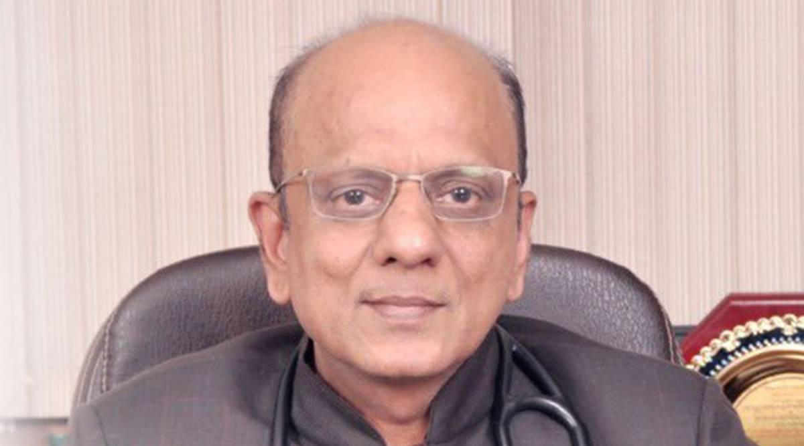
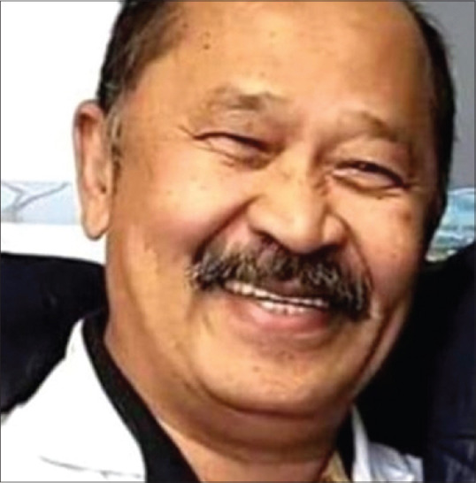
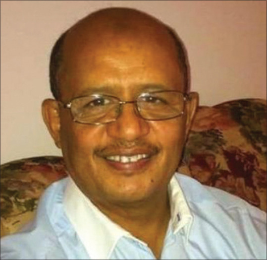

Needless to say, doctors, nurses and people working in health-care sectors are particularly vulnerable to the highly infectious disease. In response to the global pandemic, the under-resourced doctors are facing unprecedented challenges. The list of the sleep-deprived heroes includes doctors, nurses, medical cleaners, pathologists, paramedics, ambulance drivers, and health-care administrators.
In the fight against coronavirus, the brave medical army stands strong with thermometers, stethoscopes, and ventilators as their weapons. Not to forget, medical researchers are working day in and night out against all odds, hoping to find the antidote to the disease.
Since the coronavirus outbreak, health-care professionals have not only experienced the gratification of healing patients and saving their lives but have also lost many battles along the way. On top of that, many doctors have even sacrificed their own lives in the line of duty.
Every day, the selfless warriors are giving it their all in health-care settings while cutting themselves off from their families and loved ones. The sacrifice that they are making for the safety and welfare of humanity is priceless and deserves lifelong gratitude on our end. Most importantly, we must reassess the value health-care workers hold in our lives and the kind of treatment they get from us. Among the several lessons this coronavirus pandemic has been teaching us, the biggest one is to find ways to sufficiently invest in the better and more efficient medical fraternity and give medical professionals the respect, compensation and infrastructure that they truly deserve once this crisis is over. Moreover, the world needs to work towards advancement in medical research and technology. Nothing will be a greater tribute to the health-care workers than this.
That being said, we'd now like to highlight the heroic efforts of some courageous and inspiring doctors from across the globe who lost their lives while saving the lives of COVID-19 patients.

Dr Aggarwal passed away at Delhi’s All India Institute of Medical Sciences after a long battle with the virus.
The 62-year-old was a cardiologist, head of the Heart Care Foundation of India (HCFI) and former president of the Indian Medical Association (IMA). He received the Dr BC Roy Award in 2005 and the Padma Shri in 2010.
Over the past year, Dr Aggarwal’s popularity grew as he frequently posted videos on social media platforms in which he answered Covid-related queries and held talks about various aspects of the disease and its management.
A statement from his family said, “He was unwavering in his mission of making quality healthcare available to the masses especially the economically weaker sections. Even with the pandemic raging, he worked relentlessly to reach out to over 100 million people through his digital initiatives. His informational videos and educational programmes proved instrumental in saving a large number of lives from the viral infection.”
In one of his last Covid-related video shows on April 27, Dr Aggarwal came on screen wearing a surgical gown and announced that he was about to go out to get a CT scan done.
“I have taken three masks and a face shield. I will go now to get my CT scan done. All of you know that I have received two doses of the vaccine and I have got a classical breakthrough Covid,” he said at the start of a Facebook live video and then proceeded to answer Covid related queries of patients for the next 20 minutes before heading out for the scan.
After the procedure was done, Dr Aggarwal got back home and did another Facebook live session for three minutes in which he spoke about what was noticed in the CT scan.
“My CT scan is normal. Don’t be afraid of vaccination. It will ultimately prevent you against severe Covid,” he said.
His colleague and former director of HCFI Dr Uday Kakroo recalled what Dr Aggarwal’s idea was behind holding talks and posting videos on social media. “He would say that I have accomplished what I wanted to accomplish and now I want to give my knowledge back to people,” Dr Kakroo said.
He added that during the pandemic, he was able to reach out to a wide audience and was holding talks even after getting infected by the virus because “he had decided that he wanted to die while working”.
Dr Aggarwal had done his schooling in Delhi and completed his MBBS from Nagpur University. He joined Moolchand Hospital in Delhi in 1983 and became a consultant there after five months of residency.
His family members said he was renowned as a pioneer of streptokinase therapy for managing heart attacks and had introduced the colour doppler echocardiography technology in India.

The death that broke several hearts in the initial days of coronavirus spread was of Dr. Li Wenliang, a Chinese ophthalmologist who tried to warn fellow practitioners about the potential outbreak of a virus. Unfortunately, he was accused of making false claims and misleading the public.
Dr. Li's warning did not depend on sophisticated laboratory testing or expensive imaging studies, but on his own understanding of biological plausibility—the kind of analysis that clinicians of all specialties could make.
The New York Times reported that on January 10, 2020, Dr Li developed a cough after having treated a woman for glaucoma who had unknowingly been infected with the coronavirus, probably by her daughter. No report suggests that he observed any ophthalmologic complications of the coronavirus infection in his patient.
The 34-year-old eye specialist, in his Weibo story, revealed how he had come down with cough and fever after a month of his warning going unnoticed.
The doctor had contracted the virus while treating a glaucoma case (suffering from corona virus) in Wuhan. Dr. Li passed away on February 7, 2020 leaving the people in China and worldwide grieving and angry.
Another doctor who died of the disease in Wuhan was just 29 years old. As per the reports, he had postponed his Lunar New Year marriage to serve humanity and treat patients who had been hit by the virus. Unfortunately, he ended up contracting the virus from one of his patients and died a hero.

One of the longest-serving doctors at Sir Ganga Ram Hospital in Delhi and renowned obstetrician and gynaecologist Dr SK Bhandari died due to Covid-19 related complications.
Dr Bhandari, who delivered Congress leader Rahul Gandhi, his sister Priyanka Gandhi Vadra and her two children, was 86.She was admitted to the hospital for some heart-related issues but tested positive for Covid-19.
She had served the hospital for 58 years. She had joined the hospital after returning to Delhi from London where she did her post-graduation.
She was the one who established the gynaecology and obstetrics department of the hospital and even though she was not an IVF specialist, she encouraged doctors in setting up the facility at the hospital.
She was going to the hospital during the first wave of the pandemic but stopped coming after she developed heart-related issues. She was offering consultation from her home.
The COVID-19 wrath is taking no stop in Italy and the situation seems to be getting out of hands in the new epicenter of the disease. More than 66 doctors who were tested positive for coronavirus in Italy have reportedly died. According to the head of an Italian research institute, a total of 8,358 health workers have caught the disease.
Dr. Roberto Stella, aged 67, was an Italian general practitioner, who died on March 10 at the Como Hospital, as confirmed by the town's mayor, Mario Landriscina. He died of respiratory failure due to coronavirus. Like other heroes, Dr. Stella had contracted the virus while actively taking care of patients and guiding them on proper care.
Another case that shattered millions of hearts across the world was of a nurse who has reportedly taken her own life after being tested positive out of the fear of spreading the disease to others.
A 67-year-old physician in Italy who, despite running out of his protective gear, continued to treat the patients ended up sacrificing his life. Furthermore, a 34-year-old doctor, Daniela Trezzi who had been working on the front line at a hospital in Lombardy died after catching the disease. Her death was confirmed by the National Federation of Nurses of Italy.

Jean-Jacques Razafindranazy was the first French doctor who died while treating coronavirus patients. The 68-year-old accident and emergency department doctor was retired but the passion that he had for serving humanity was undying. Thus, he volunteered to help his colleagues save the lives of people, as the number of incoming patients continued to increase.The retired doctor was working in an emergency ward at the Lille University Hospital where he caught the disease. His death was announced through a social media post titled “My Father: A Hero“ written by his family.
Dr. Usama Riaz, a young 26-year-old, became the first Pakistani doctor to die of coronavirus. He remained on the forefront, screening people returning from abroad from the Pakistan–Iran border at a hospital in Gilgit-Baltistan. He was busy fighting the deadly virus with utmost bravery and confidence when he contracted the virus. Upon showing symptoms, he was rushed to the hospital and was put on a ventilator but he could not make it. He proved to be a real hero by sacrificing his life while saving the lives of many.

Sixty-three-year-old Dr. Adil El Tayar became the first frontline health-care worker to die of coronavirus in the UK on March 25. The organ transplant consultant was performing his duty at St. Mary's and St. George's hospitals in London when he contracted the virus. He started showing symptoms in mid-March due to which he immediately self-isolated himself. In a matter of 12 days, he went from a perfectly fit doctor treating patients to a COVID-19 victim lying in a hospital morgue.

The Iranian doctor, Shirin Rouhani, also lost her life while treating coronavirus patients. Her determination and will power was such that she continued to treat patients till her last breath even when she herself was on IV. She knew she could not rest because of the shortage of doctors and medical workers to cater to the needs of patients.
The Philippine Heart Center announced the death of the first doctor, Dr. Israel Bactol, who was a senior Adult Cardiology fellow-in-training. The medical professionals in the country are devastated and so are the citizens. While grieving the death, they have strengthened their resolve to make it the first and last death.